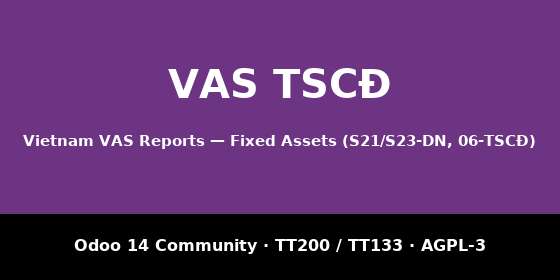

account_asset_management (branch 14.0; free, AGPL-3),
which itself needs report_xlsx_helper from
OCA/reporting-engine.
Install those first — Odoo 14 Community has no asset subledger of its own.Part of the Vietnam VAS Reports suite for Odoo 14
Community: accounting books and financial statements
(l10n_vn_vas_reports), inventory
(l10n_vn_stock_reports), manufacturing
(l10n_vn_mrp_reports) and fixed assets
(l10n_vn_asset_reports) on the shared framework
vn_core. Free and open source, AGPL-3.